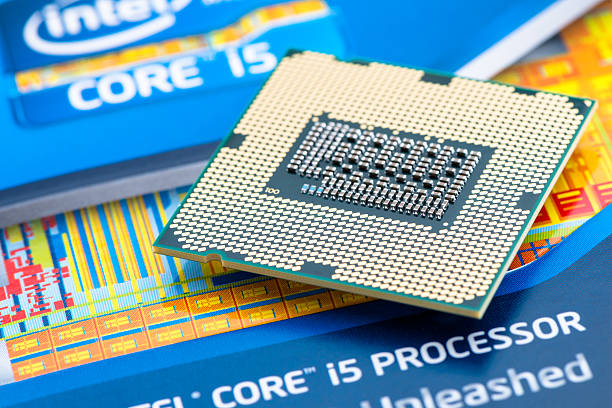

What is the impact of mini PCs on traditional desktop computers?
Posted by on 2024-06-13
In recent years, the rise of mini PCs has had a significant impact on traditional desktop computers. These compact and portable devices have revolutionized the way we think about computing, offering a smaller, more energy-efficient alternative to bulky desktops.
One of the most obvious impacts of mini PCs on traditional desktop computers is their size. Mini PCs are typically much smaller and more lightweight than traditional desktops, making them easier to transport and set up in different locations. This portability has made mini PCs popular among students, professionals, and anyone else who needs to work on the go.
Another important impact of mini PCs is their energy efficiency. Mini PCs consume less power than traditional desktops, which can lead to lower electricity bills and a reduced environmental footprint. This is particularly important as we become more conscious of our energy consumption and its impact on the planet.
Furthermore, mini PCs often come with built-in Wi-Fi and Bluetooth capabilities, allowing for seamless connectivity to other devices. This makes it easier to share files, stream media, and connect peripherals without the need for additional cables or adapters. Additionally, many mini PCs offer multiple USB ports, HDMI outputs, and SD card slots for added convenience.
Despite these benefits, there are still some limitations to consider when comparing mini PCs to traditional desktop computers. Mini PCs typically have less processing power and storage capacity than traditional desktops, which may limit their performance for tasks that require high levels of processing power or large amounts of storage space.
Overall, the impact of mini PCs on traditional desktop computers has been significant. Their small size, energy efficiency, and connectivity options have made them a popular choice for those looking for a versatile computing solution. While they may not be suitable for every user or every task, mini PCs offer a compelling alternative to traditional desktops that is worth considering for anyone in need of a compact and efficient computing solution.